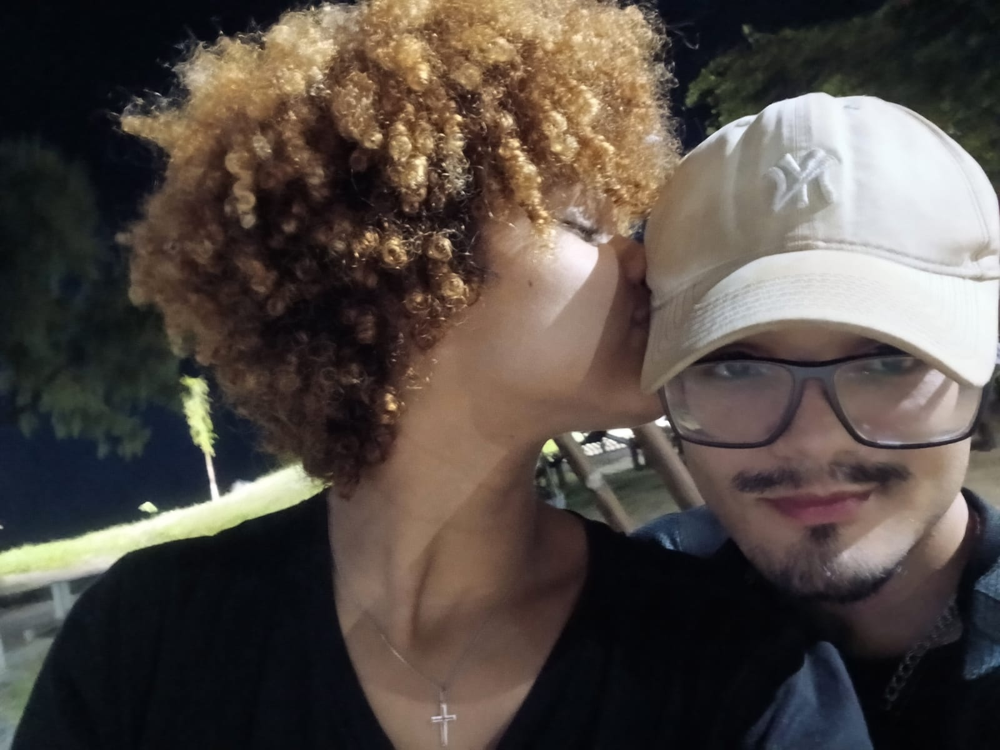
Toque para abrir
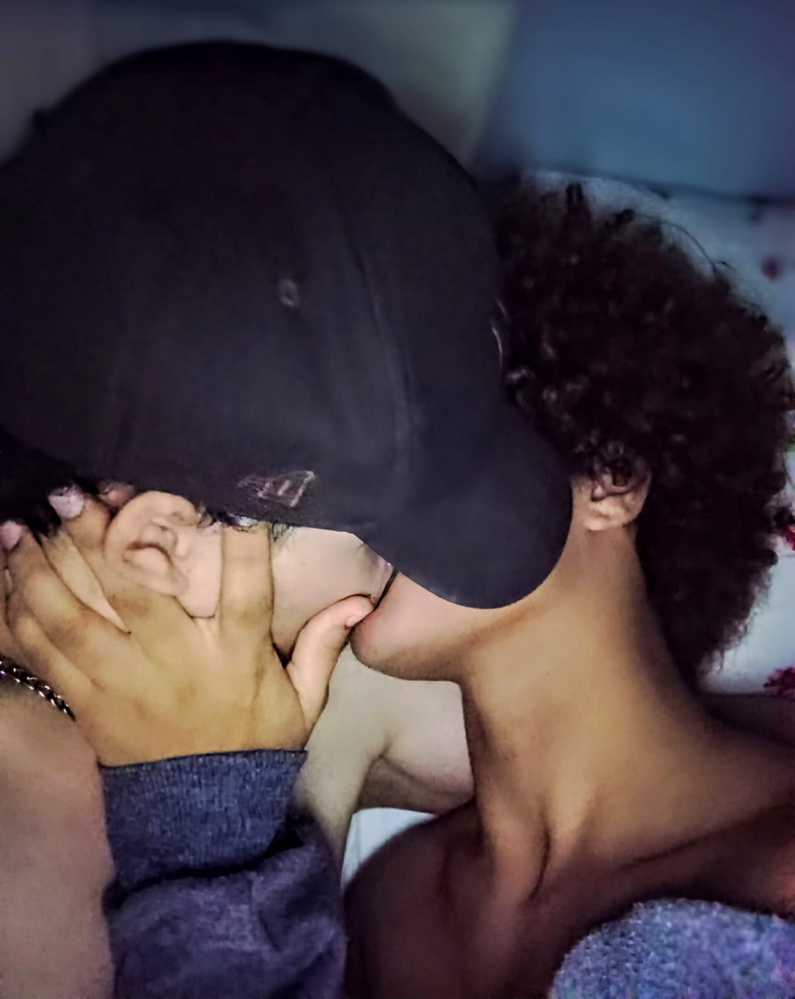
Aqui foi onde tudo começou, onde nasceu essa jornada maravilhosa, cheia de momentos engraçados, carinho e amor ao seu lado. Hoje, olhar para esse lugar é lembrar de como tudo começou e de como sou feliz por ter você na minha vida. Mal sabia eu que, naquele momento, estava começando uma das histórias mais bonitas que eu poderia viver.❤️
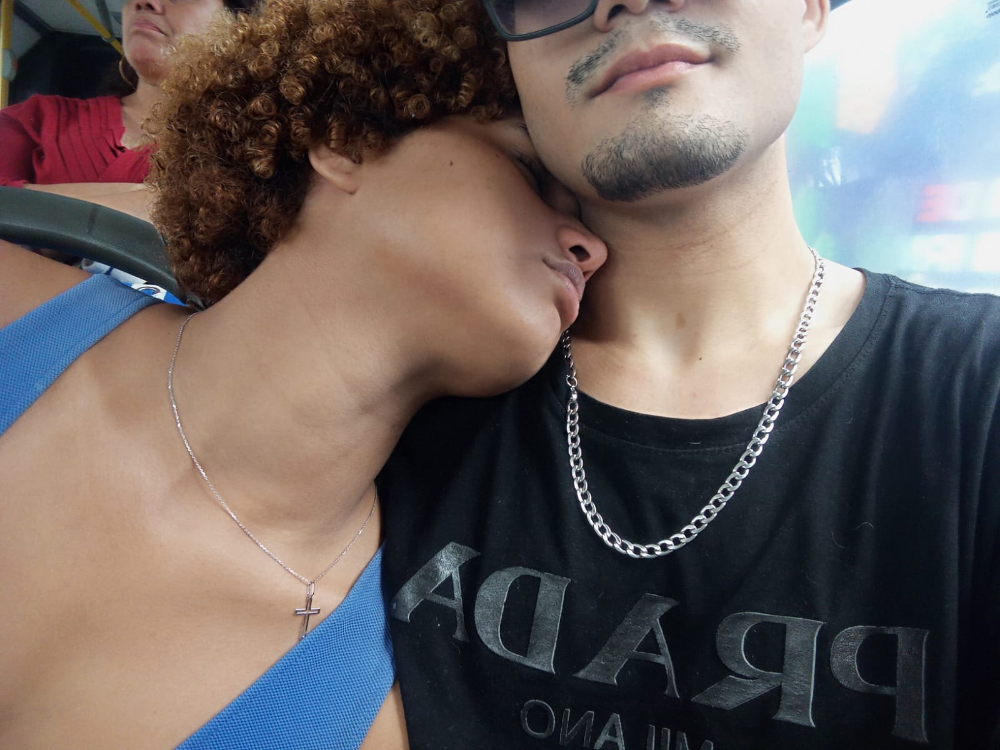
Um dos momentos que guardo com muito carinho, foi quando você conheceu minha mãe. Tiramos várias fotos fazendo jojo pose e demos tantas risadas que esse dia se tornou uma lembrança muito especial para mim. Ver você ali, fazendo parte da minha vida e compartilhando esses momentos comigo, deixou meu coração quentinho. Você é tão linda, mas o que mais me encanta é a forma como sua presença deixa tudo mais leve, divertido e especial.
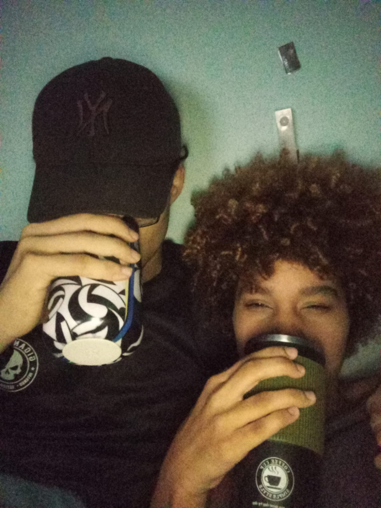
Eu te dando licor de café (que, aliás, você adorou) e você tomando enquanto eu ficava ali, te admirando. Acho que você nem imagina o quanto eu gosto de te observar, reparar nos seus traços, no seu olhar, nos seus lábios e em cada detalhe que faz de você alguém tão linda aos meus olhos. Às vezes, fico te olhando em silêncio, simplesmente encantado, tentando guardar cada pedacinho daquele momento na memória. É impressionante como você consegue ser tão linda sem nem precisar tentar. E, quanto mais te olho, mais percebo que minha admiração por você vai muito além da sua beleza: é um privilégio poder estar perto de alguém que me encanta tanto. ❤️
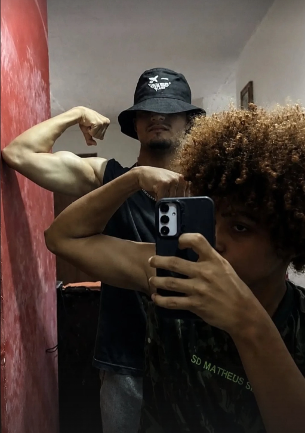
tiramos essa foto mil aura 67676767🔥
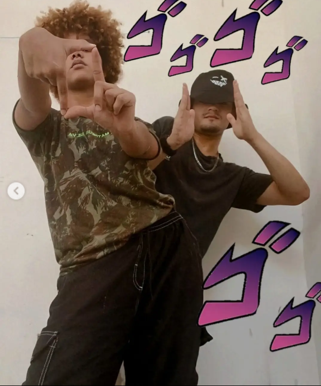
Nesses primeiros dias que você passou aqui em casa, tiramos tantas fotos e passamos tanto tempo juntos, rindo, brincando e aproveitando cada segundinho. Com você, o tempo parece passar mais rápido, mas, ao mesmo tempo, cada momento ganha um significado especial. Você tem esse dom de tornar tudo mais leve, de transformar dias comuns em lembranças que eu quero guardar para sempre. Ter você pertinho de mim, compartilhando as pequenas coisas do dia a dia, me fez perceber o quanto a sua presença é capaz de deixar minha vida mais feliz.
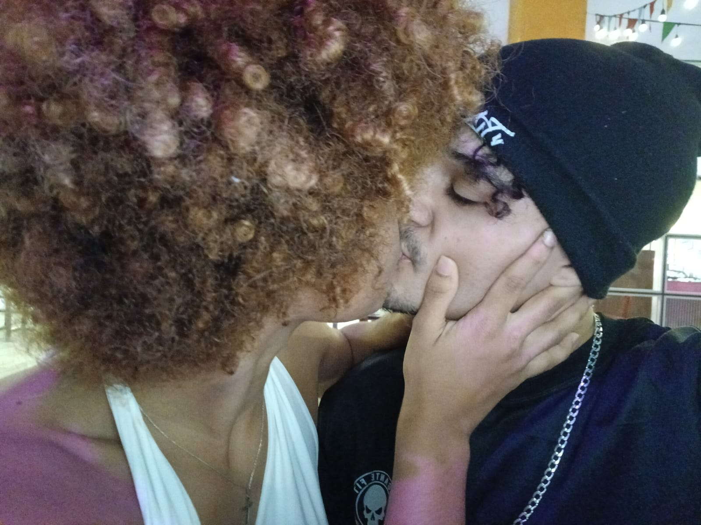
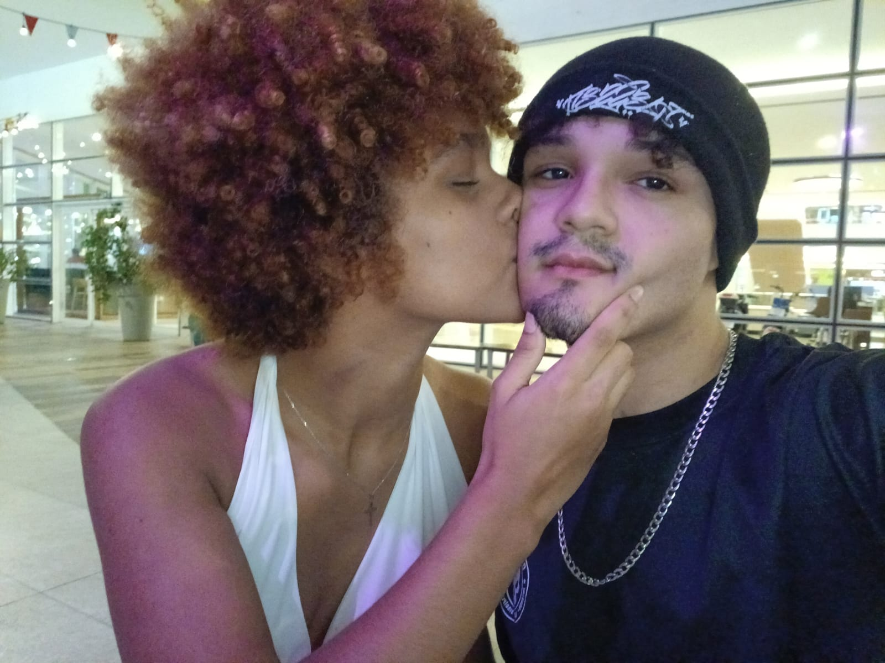
Nesse dia, saímos para conhecer um pouco mais da minha cidade, e você acabou se surpreendendo com a nossa famosa "Boa Viagem de Olinda" KKKKKKK. Tomamos milkshake no shopping, andamos bastante e exploramos vários lugares juntos. Foi um daqueles passeios simples que se tornam especiais só porque estou ao lado da pessoa certa. E, como sempre, você estava absurdamente linda. Às vezes, eu tentava prestar atenção no lugar que estávamos conhecendo, mas acabava me distraindo admirando você. É difícil não reparar na sua beleza, principalmente quando tenho a sorte de poder caminhar ao seu lado e apreciar de pertinho esse sorriso e esse jeitinho que me encantam tanto. ❤️
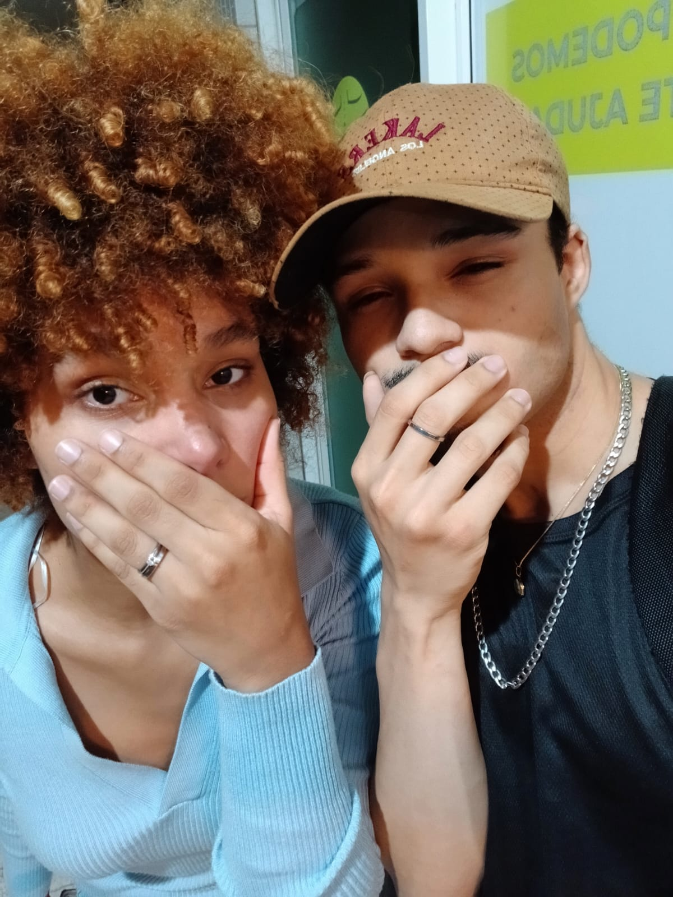
O nosso primeiro dia de namoro foi tão especial, cheio de risadas, carinho e momentos que vou guardar com muito amor. E, como se o nosso começo já não fosse aleatório o suficiente, depois de oficializarmos tudo ainda fomos comemorar com aquele seu fisioterapeuta ex-militar KKKKKKKKK. Sinceramente, não poderia existir um começo mais a nossa cara: completamente inesperado, engraçado e cheio de histórias para contar. Mas, no meio de toda essa aleatoriedade, tinha algo muito bonito acontecendo: nós finalmente estávamos juntos, podendo chamar de namoro aquilo que já fazia meu coração tão feliz. E eu não poderia ter escolhido alguém melhor para viver essa história comigo. ❤️
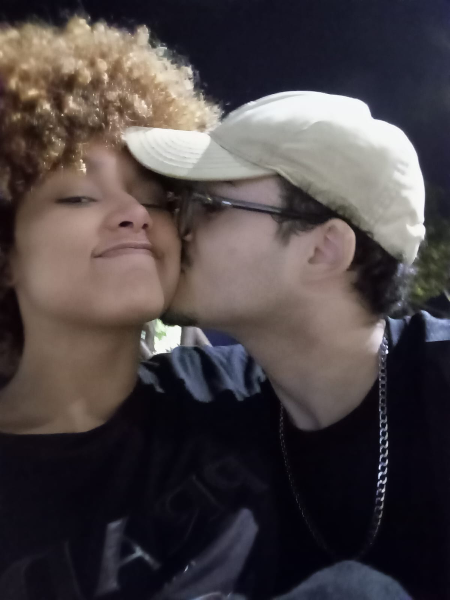
Depois de passar MUITO tempo sem te ver (um mês inteiro, praticamente uma eternidade KKKKKKK) e ter que me contentar com videochamadas e ligações, finalmente conseguimos nos encontrar de novo. Foram só duas horinhas, mas, sem exagero, foram as melhores duas horas da minha semana. Porque, por mais que eu gostasse de ouvir sua voz pelo celular e ver seu rostinho pela tela, nada se compara a ter você ali, de verdade, pertinho de mim. Poder te abraçar, olhar nos seus olhos, sentir sua presença e aproveitar cada segundo ao seu lado fez toda aquela saudade valer a pena. Naquele momento, eu só queria que o tempo passasse mais devagar, porque duas horas com você nunca parecem suficientes.
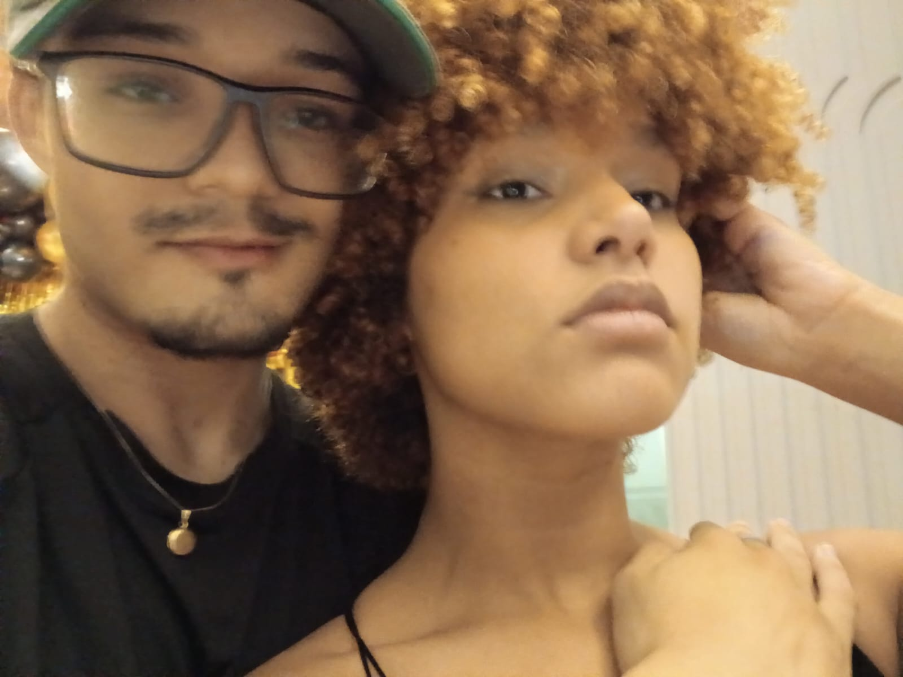
Esse dia foi engraçado demais KKKKKKKKK. Conheci suas amigas, que também renderam boas risadas, farmei aura andando pela rua e ainda conheci a lendária menina do MIIIIIAAAAAUUUU KKKKKKKKKKK. Nosso encontro teve de tudo um pouco, como sempre acontece quando estamos juntos. Mas, deixando essas figuras de lado por um instante, teve algo que realmente ficou marcado na minha memória: você. Porque, no meio de toda aquela bagunça e das risadas, eu olhava para você e só conseguia pensar no quanto estava linda. Sério, garota, você estava tão deslumbrante que parecia uma anja. Era como se você tivesse conseguido ficar ainda mais bonita do que já é, e eu ficava completamente encantado só de ter você ali, na minha frente. ❤️❤️❤️
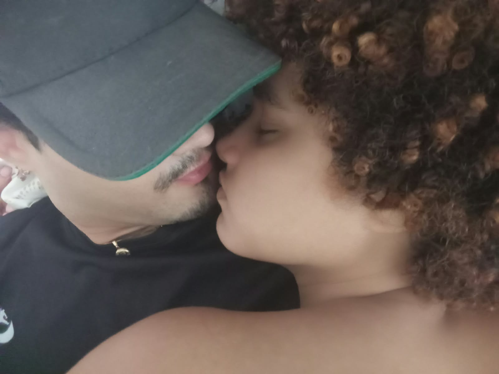
Enquanto você dormia em cima de mim naquele dia, eu ficava ali, quietinho, te observando e admirando cada detalhe seu. Ver você tão tranquila, confortável e pertinho de mim despertou um sentimento tão bonito que eu nem sei explicar direito. Eu olhava para você e pensava na sorte que tive de encontrar alguém como você: uma mulher inteligente, amável, carinhosa, dedicada e absolutamente linda. E não estou falando apenas da sua beleza exterior, embora você consiga me deixar completamente bobo só com o seu rosto. É também sobre a pessoa que você é, sobre o seu coração, sua inteligência e a forma como consegue me fazer feliz sem nem perceber. Minha bebezinha.
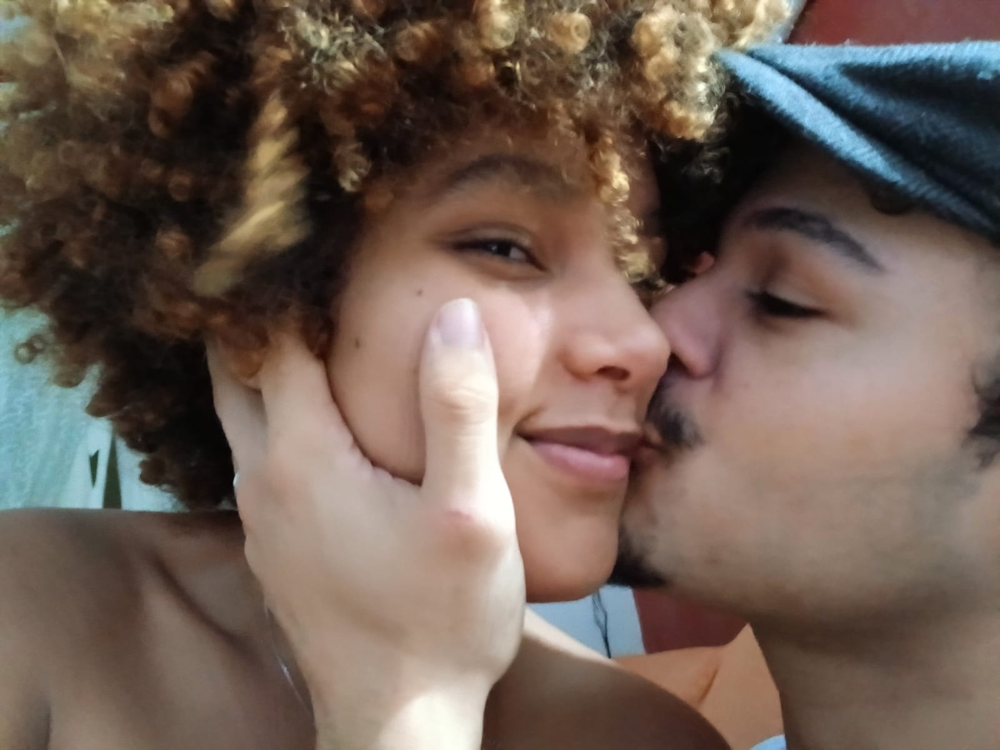
Não tem nem muito o que falar, só foi muito engraçado a gente fazendo inveja a ferrada da Kamille que não tem ninguém KKKKKKKKKKKKK
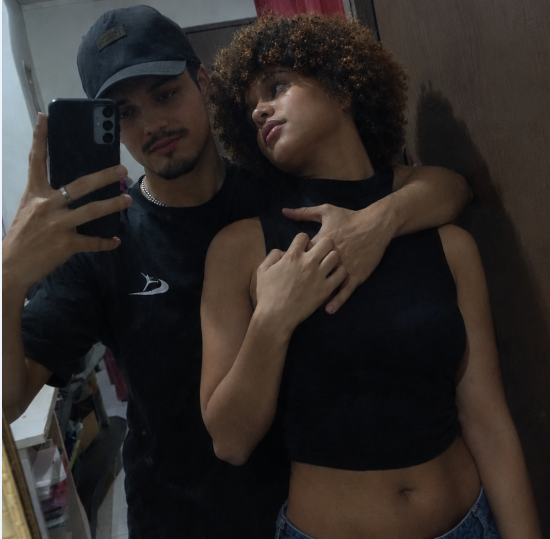
Eu te amo, garota. Amo o seu jeito, a sua inteligência, que me cativa cada vez mais, e essa sua capacidade de me surpreender até nas conversas mais bobas. Amo o seu senso de humor estranhamente parecido com o meu — inclusive, pare de me copiar, isso já está ficando suspeito KKKKKKK. Amo a maneira como você pensa, como fala das coisas que gosta, como se dedica ao que é importante para você e como consegue ser tão incrível sendo simplesmente você mesma. E, claro, amo a sua beleza, que é impossível não admirar. Não é à toa que todo mundo que olha para você diz que você deveria ser modelo. Você é realmente linda, garota, daquelas pessoas que chamam a atenção sem precisar fazer esforço algum. Mas o que mais me encanta é que, quanto mais eu te conheço, mais motivos encontro para te admirar. Não é só o seu rosto bonito, o seu sorriso ou o seu olhar; é o conjunto de tudo o que você é. É a mulher incrível que existe por trás dessa beleza toda. Eu amo poder conhecer cada vez mais de você, compartilhar nossas maluquices, rir das nossas besteiras e construir tantas lembranças ao seu lado. E, se tem uma coisa que eu quero que você nunca esqueça, é que, mesmo nos dias em que você não conseguir enxergar o quanto é maravilhosa, eu vou continuar enxergando. Vou continuar admirando sua beleza, valorizando sua inteligência, amando seu jeitinho e encontrando motivos para me apaixonar ainda mais por você. Eu te amo por quem você é, pela forma como me faz sentir e por tudo o que ainda vamos viver juntos. E, entre todas as pessoas que eu poderia ter encontrado, sou muito feliz por ter sido você. ❤️